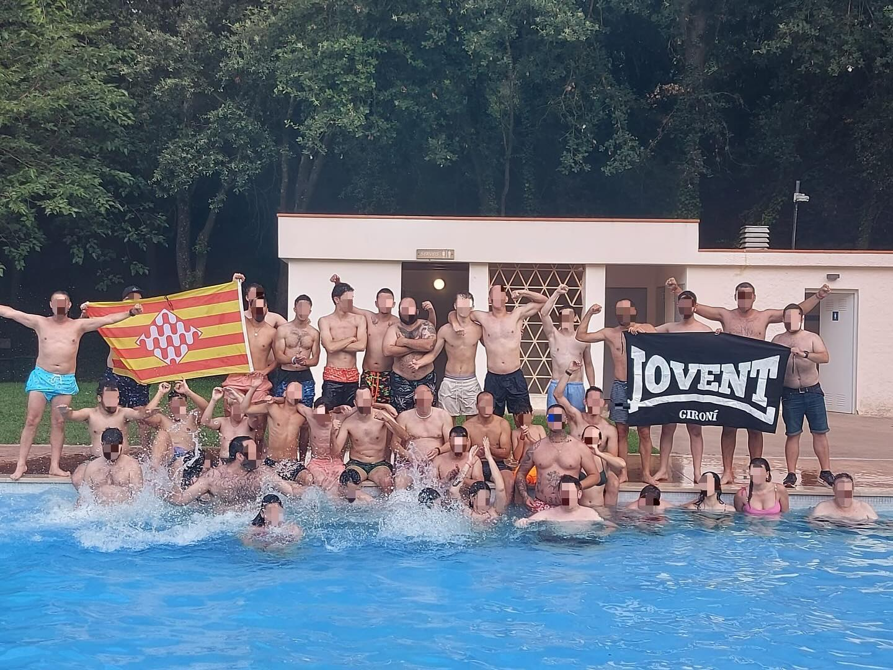

≡
inici
identitat
notícies
botiga
galeria
contacte
inici
identitat
notícies
botiga
galeria
contacte
Tots
Partits
Viatges
Activitats
Moments Especials
Parc dels Prínceps
Parc dels Prínceps
Santiago Bernabeu
Wanda Metropolitano
Mestalla
La Ceràmica
Sanchéz Pizjuan
Jovent Catedral Girona
Jovent a Paris
Corteig Paris
Jovent a Mallorca
Sortida Jovent Gironí

Jovent Piscina
BBQ Jovent Gironí
Míchel Català
Taty no me falles
Stuani Capità
Samarreta Stuani Jovent
Mural Jovent
Girona a Primera